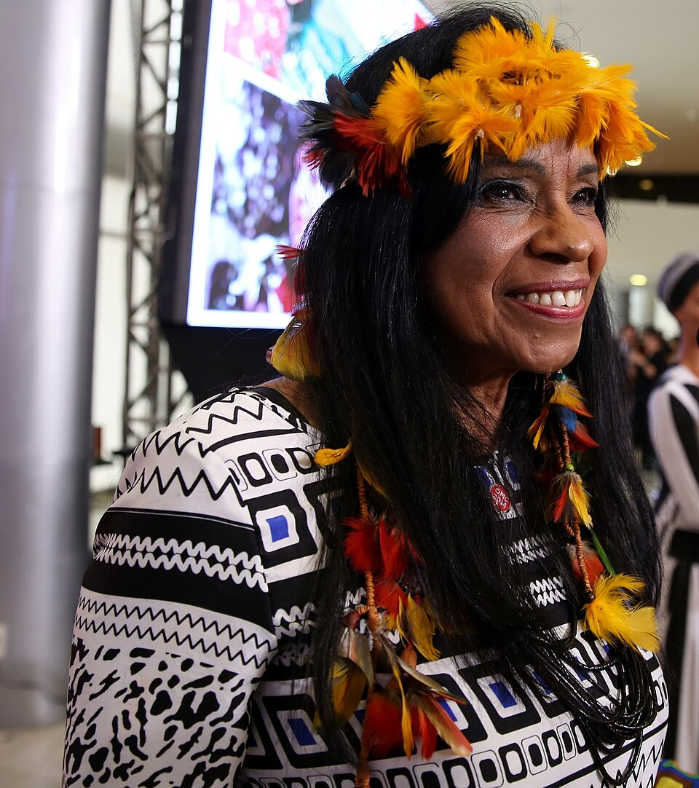
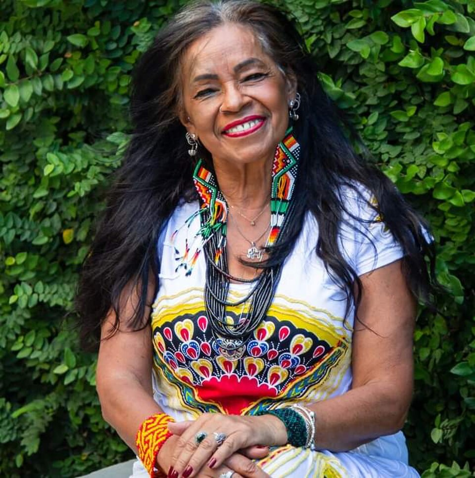

1957
Nasce Eliane Potiguara na Paraíba, descendente do povo Potiguara. Cresce em contexto de discriminação racial e de invisibilidade indígena. Desde cedo, demonstra interesse por poesia e expressão artística como forma de compreender o mundo.

"Estar em estado de liberdade é estar em estado de existência na paz."
Eliane Potiguara
Foto: Tânia Rêgo / Agência Brasil.
Trajetória inicial: origens, formação artística e engajamento político

Foto: Elisabete Alves / MinC-BR. Recorte: Praxides. Licença: Creative Commons Attribution 2.0.
Eliane Potiguara nasceu na Paraíba, descendente do povo Potiguara, um dos povos indígenas mais antigos do Brasil. Desde sua infância, vivenciou as dificuldades e discriminações enfrentadas pelos povos indígenas em busca de reconhecimento territorial e justiça social. Seu nome indígena significa "aquela que retorna", refletindo sua jornada de resgate de identidade, história e dignidade de seu povo. Desenvolveu-se como poetisa desde jovem, usando a palavra como ferramenta de resistência e denúncia. Sua educação formal lhe permitiu aprofundar conhecimentos sobre história, política e sociedade, mas foi na vivência com seu povo que aprendeu as lições mais valiosas sobre resistência e força coletiva.
Eliane Potiguara se consolidou como uma das principais vozes do feminismo indígena brasileiro, articulando análises sobre a opressão específica vivida por mulheres indígenas. Sua poesia não é apenas expressão artística, mas ato político de resistência contra o silenciamento e a invisibilidade de povos indígenas. Como ativista, participou de movimentos pela demarcação de terras indígenas, pela valorização de saberes ancestrais e pela proteção de direitos humanos dos povos originários. Sua obra percorreu gerações, inspirando outros indígenas a se assumirem como tais e a lutarem por suas identidades. Mesmo enfrentando perseguições, discriminação e dificuldades econômicas, Eliane permanece como referência de resistência intelectual e política, mostrando que a poesia indígena é arma poderosa de transformação social.
Nasce Eliane Potiguara na Paraíba, descendente do povo Potiguara. Cresce em contexto de discriminação racial e de invisibilidade indígena. Desde cedo, demonstra interesse por poesia e expressão artística como forma de compreender o mundo.
Eliane aprofunda sua formação educacional e começa a participar de movimentos sociais. Desenvolve consciência política sobre as lutas indígenas e inicia seu trabalho como poetisa, articulando palavra poética com ativismo político.
Participa ativamente dos movimentos indígenas em formação no Brasil. Sua poesia ganha visibilidade em círculos de ativismo. Começa a articular análises sobre as especificidades da opressão vivida por mulheres indígenas.
Publica sua primeira coletânea de poesias que combina reflexão sobre identidade indígena, resistência e feminismo. Participa de conferências internacionais sobre povos indígenas e direitos das mulheres indígenas.
Consolida sua carreira como poetisa e intelectual indígena. Publica novos livros que aprofundam reflexões sobre demarcação de terras, identidade, resistência e a especificidade da luta das mulheres indígenas.
Continua participando de movimentos indígenas, conferências internacionais e trabalhos de educação. Sua poesia circula em universidades, escolas e espaços de ativismo, inspirando novos movimentos de resistance.
Eliane permanece como referência intelectual e artística para gerações de indígenas que se reconhecem em sua poesia e em seu compromisso com a libertação de seu povo. Continua escrevendo, publicando e participando de debates sobre direitos indígenas.
Eliane Potiguara permanece como voz viva da poesia indígena e do feminismo indígena, inspirando resistência, identidade e transformação social através de sua arte e seu ativismo.

Foto: Eliane Potiguara — via Acervo de Escritoras Indígenas
Eliane Potiguara é extraordinária porque usou a poesia como arma política de resistência contra o silenciamento e a invisibilidade de povos indígenas. Em um país que historicamente invisibilizou a produção intelectual e artística de indígenas, Eliane se recusou a ser apagada. Sua poesia não é apenas bela, é incisiva — ela questiona, denuncia, celebra e chama à resistência. Ela provou que palavras indígenas têm poder transformador, que a arte não é separada da política, mas ferramenta de libertação.
O que torna Eliane ainda mais notável é sua dedicação a temas que frequentemente eram negligenciados: a especificidade da opressão vivida por mulheres indígenas. Enquanto alguns movimentos indígenas reproduziam machismo, Eliane levantava a voz em favor das mulheres indígenas, mostrando que não era possível falar de libertação indígena sem falar de libertação das mulheres. Sua inteligência política articulada com sensibilidade artística criou um espaço único de reflexão e resistência.
Além disso, Eliane desafiou a ideia de que indígenas não têm história intelectual, que não são pensadores e produtores de conhecimento. Através de sua poesia, ela não apenas registrou a história de seu povo, mas criou narrativas alternativas àquelas impostas pela colonização. Ela provou que a poesia indígena é história, é política, é resistência. Por tudo isso, Eliane não é apenas uma poetisa importante, mas uma das principais intelectuais indígenas brasileiras e uma referência global para o feminismo indígena.
Influência sobre poesia indígena, feminismo indígena e consciência política.
O legado de Eliane Potiguara está fundamentalmente na consolidação de uma poesia indígena como ferramenta de resistência e transformação. Primeiro, ela abriu caminhos para que outros indígenas se assumissem como produtores intelectuais e artísticos. Sua coragem de publicar, de circular em espaços que historicamente excluíram indígenas, abriu portas para uma geração de escritores, poetas e pensadores indígenas que vieram depois dela. Segundo, Eliane estabeleceu as bases do feminismo indígena brasileiro, demonstrando que mulheres indígenas não apenas sofrem opressão, mas são agentes de sua própria libertação, através de sua arte, sua inteligência e seu ativismo.
Além disso, Eliane reafirmou a importância dos saberes ancestrais, das culturas indígenas e da língua indígena como resistência contra a homogeneização cultural imposta pela colonização. Sua poesia celebra a terra, os antepassados, a comunidade — elementos fundamentais para a compreensão de quem são os povos indígenas. Hoje, Eliane é celebrada em universidades, em círculos intelectuais e em movimentos sociais como uma das principais vozes da poesia indígena brasileira. Seu trabalho continua inspirando gerações de indígenas a se assumirem como tais, a reclamarem suas terras, suas histórias e suas identidades. Seu legado encoraja que mulheres indígenas ocupem espaços de fala, que suas palavras sejam ouvidas e que a poesia indígena seja reconhecida como contribuição fundamental à cultura e ao pensamento brasileiro.
Livros, artigos e documentos históricos.
Coletânea de poesias que refletem sobre identidade indígena, terra, resistência e feminismo indígena. Obra fundamental da autora. Link: https://www.amazon.com.br/
Obra que reúne reflexões de Eliane sobre a história e as lutas específicas das mulheres indígenas no Brasil e na América Latina. Link: https://www.amazon.com.br/
Análise acadêmica sobre a importância da poesia de Eliane Potiguara e de outros poetas indígenas como ferramenta de resistência e transformação social. Link: https://www.jstor.org/
Artigo com visão geral da vida, obra e importância política de Eliane Potiguara. Link: https://pt.wikipedia.org/wiki/Eliane_Potiguara
Site com informações sobre povos indígenas do Nordeste brasileiro, incluindo documentação sobre o povo Potiguara e a atuação de Eliane. Link: https://www.socioambiental.org/
Coletânea que inclui poesias de Eliane Potiguara e de outros poetas indígenas, documentando a importância da produção artística indígena. Link: https://www.amazon.com.br/
Conheça outras trajetórias marcantes da luta por justiça e transformação social.

Foto: John Mathew Smith / www.celebrity-photos.com, via Wikimedia Commons.
Simbolo da luta contra a segregação racial nos Estados Unidos e referência mundial em coragem civil.
Saiba mais
Imagem: representação de Bartolina Sisa em cédula boliviana — via Banco Central da Bolívia.
Estrategista quilombola cuja resistência ajudou a marcar a luta negra por liberdade no Brasil lorem.
Saiba mais
Imagem: representação de Bartolina Sisa em cédula boliviana — via Banco Central da Bolívia.
Intelectual fundamental para os debates sobre feminismo negro, cultura e desigualdade racial no Brasil.
Saiba mais
Imagem: representação de Bartolina Sisa em cédula boliviana — via Banco Central da Bolívia.
Liderença indigêna e jurista que ampliou a presença dos povos originários nos espaços de decisão.
Saiba mais